{kind=link}
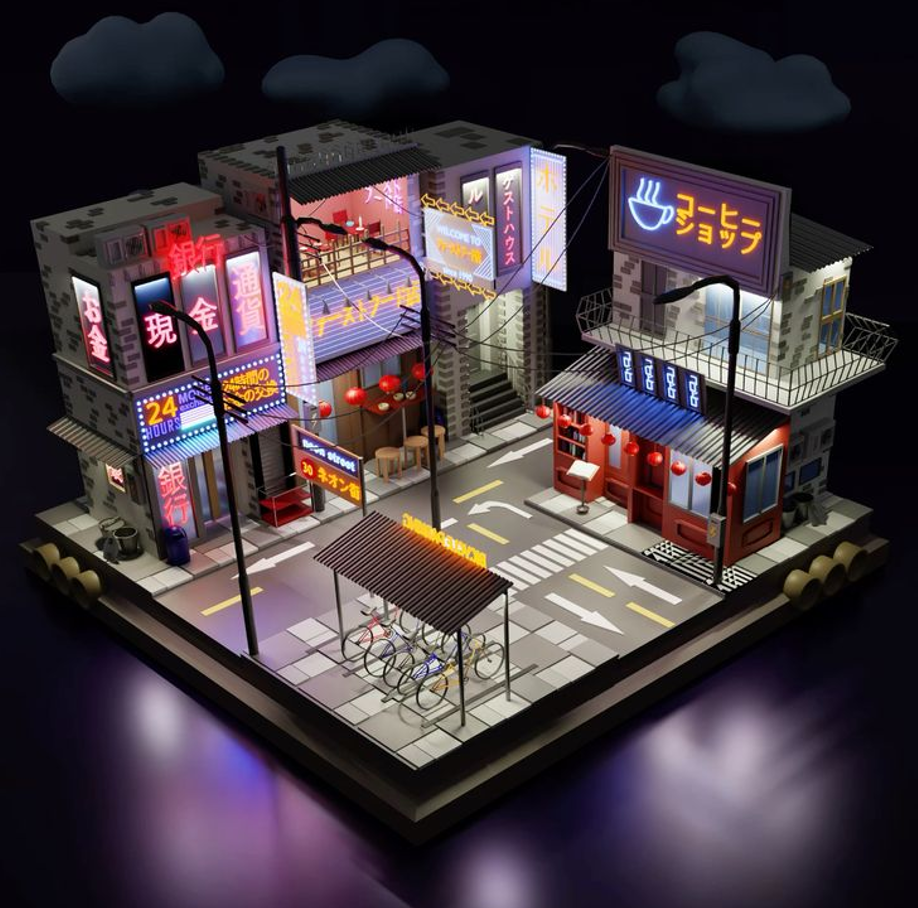
M01-01 · ORIGINAL REFERENCE
쿼터뷰 디오라마·바닥 단면
참고 카메라, 전체 베이스, 두께와 측면 단면만 참고
제외 네온·상점가·일본풍·팔레트·고밀도 재질은 제외
refs/master01/composition_cutaway.png공간은 01·02, 표현은 03, 세계관은 04. 원본 19장과 검토용 시안 3장을 구분했습니다. 이미지를 누르면 원본을 엽니다. 이 갤러리는 탐색용이며, 갤러리 전체를 생성 레퍼런스 한 장으로 사용하지 않습니다.

참고 카메라, 전체 베이스, 두께와 측면 단면만 참고
제외 네온·상점가·일본풍·팔레트·고밀도 재질은 제외
refs/master01/composition_cutaway.png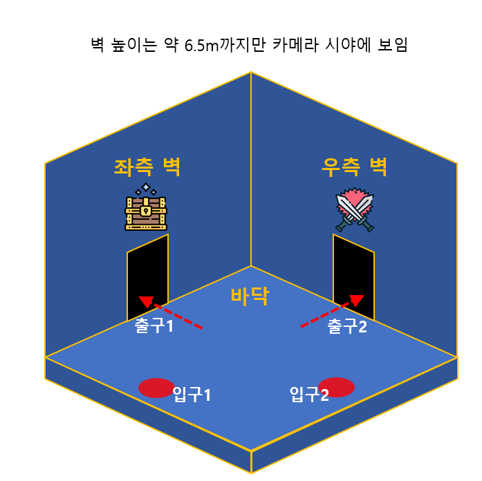
참고 이동 경계, 각 뒤쪽 면의 출구, 높이 상한만 참고
제외 파란 벽·글자·아이콘·화살표·입구 표시·정중앙 배치는 복사하지 않음
refs/master02/layout_two_exits.png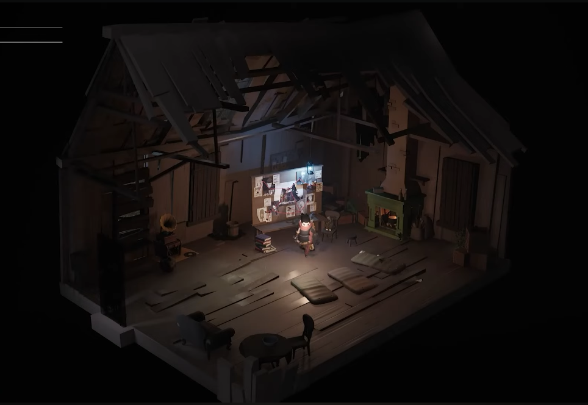
참고 큰 형태·목재 면·선택적 상세·국소 조명
제외 세계관·장소·캐릭터·카메라·지붕 높이 제외
refs/master03/ldi_01_attic.png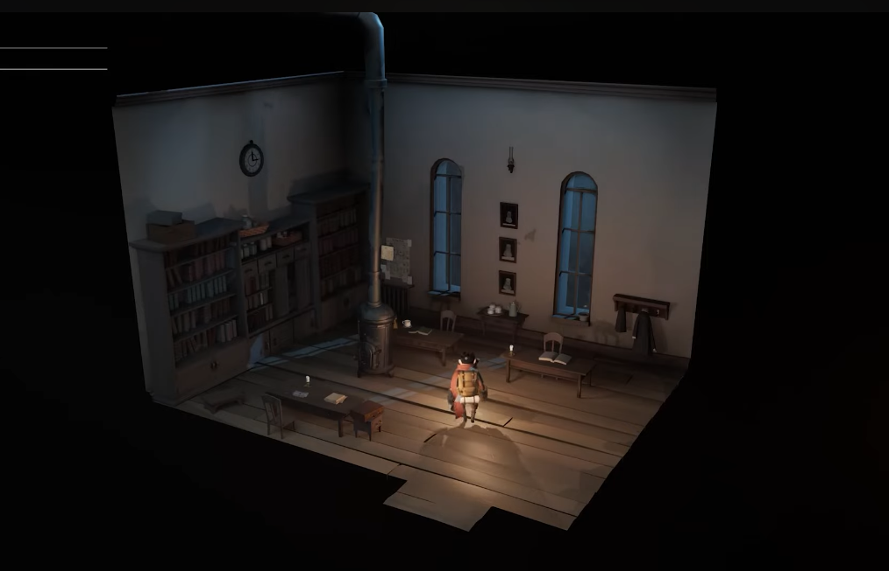
참고 넓은 벽면·정돈된 가구 형태·빛과 면의 관계
제외 중앙 가구 배치·캐릭터·시대·창문 형태 의무화 제외
refs/master03/ldi_02_reading_room.png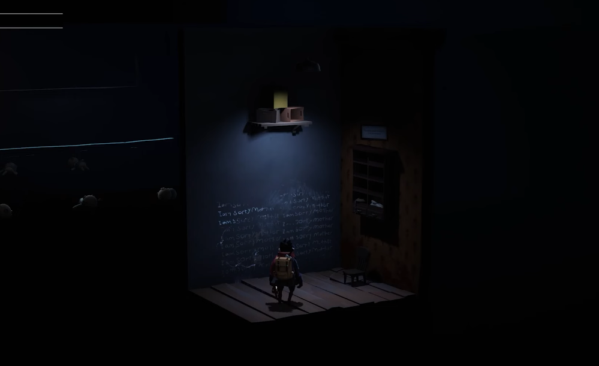
참고 어두운 면과 국소광의 대비
제외 과도한 암부·구도·캐릭터·낙서 문구 제외
refs/master03/ldi_03_dark_corner.png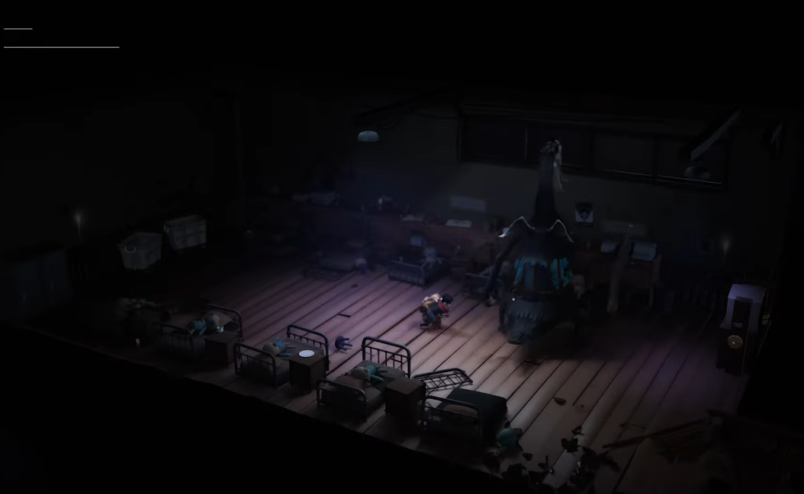
참고 광원의 집중과 덩어리 명암
제외 캐릭터·몬스터·침대 중앙 배치·세계관 제외
refs/master03/ldi_04_large_interior.png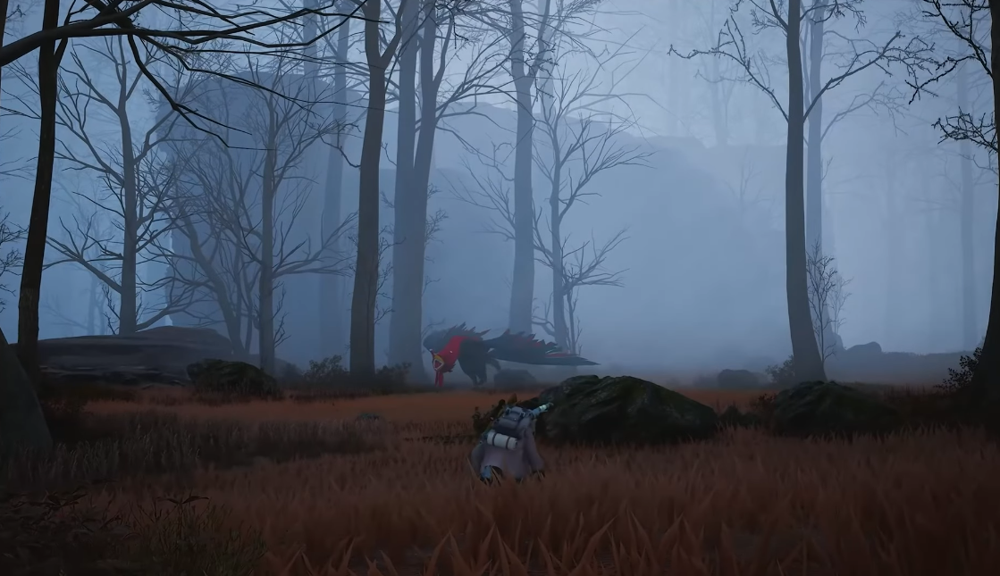
참고 차분한 팔레트·단순화된 자연물·안개층
제외 숲 테마·인물·몬스터·낮은 카메라·거대한 나무 높이 제외
refs/master03/ldi_05_fog_forest.png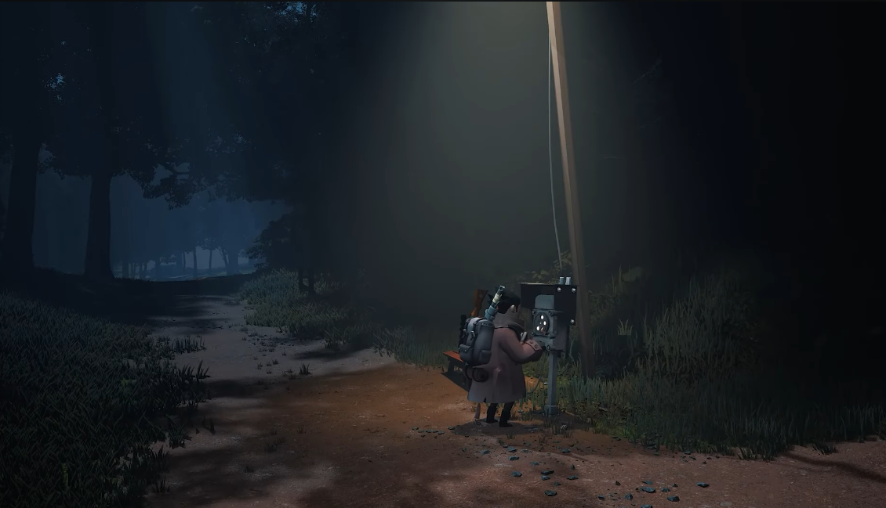
참고 쿨톤 환경과 조명 영역·소재 절제
제외 주인공·장비·구도·전력 상태 고정 제외
refs/master03/ldi_06_night_path.png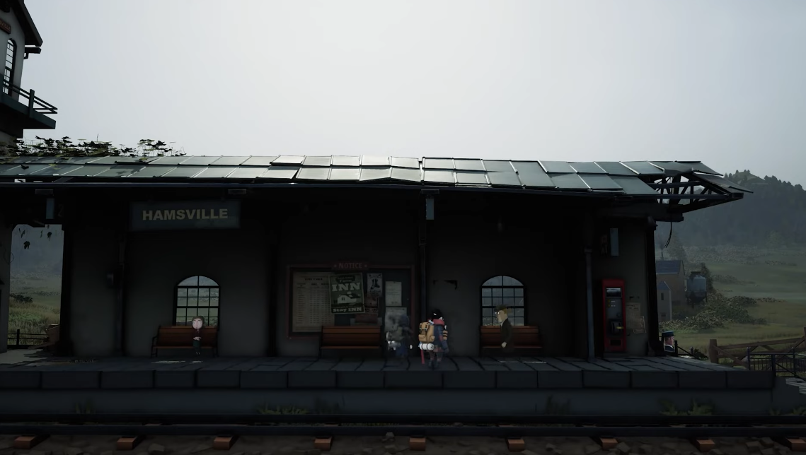
참고 큰 벽·지붕 면·재질의 생략과 부분 손상
제외 역 건축·철도 테마·정면 구도·캐릭터 제외
refs/master03/ldi_07_station.png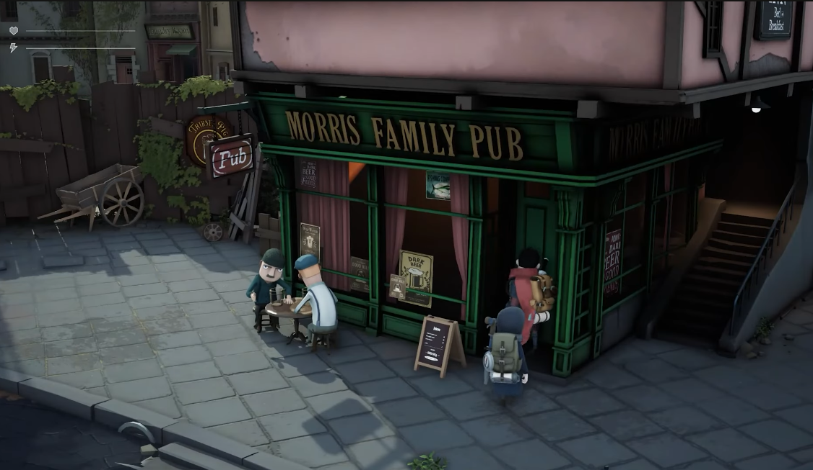
참고 넓은 도장면·큰 포장석·형태로 읽히는 재질
제외 펍·영국풍 건축·상호·캐릭터 제외
refs/master03/ldi_08_pub_exterior.png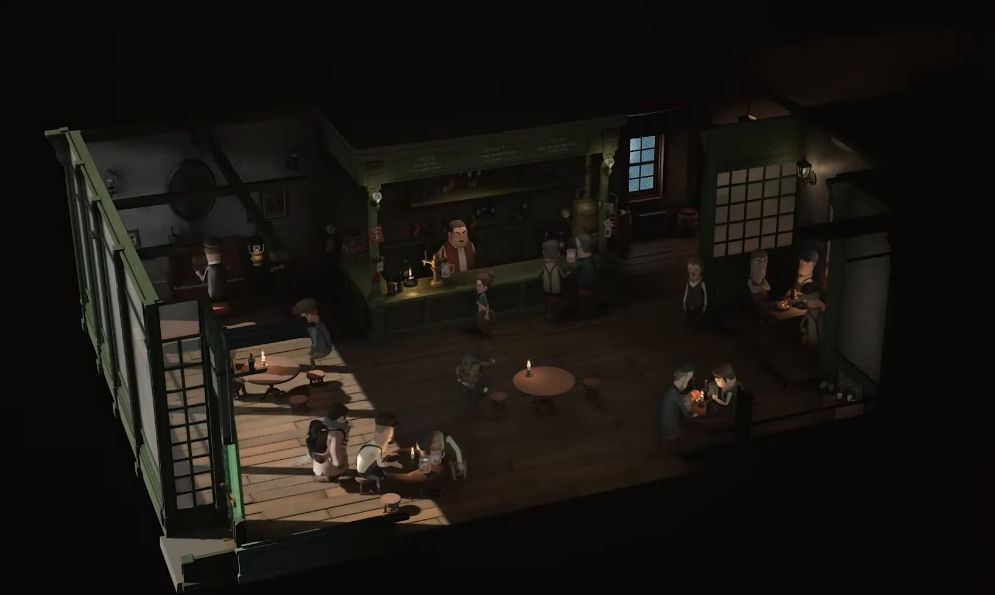
참고 면 중심의 가구·재질·국소적인 따뜻한 조명
제외 술집 테마·중앙 가구·캐릭터·시대 제외
refs/master03/ldi_09_pub_interior.png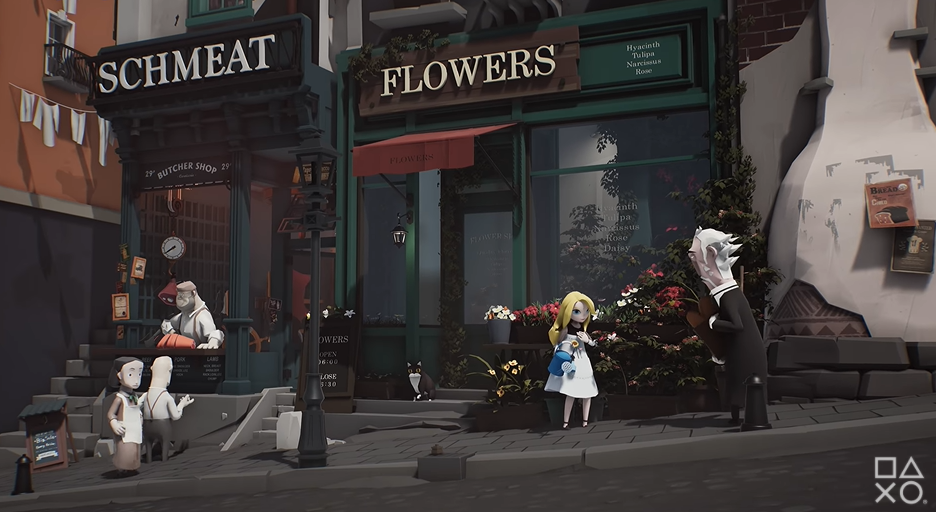
참고 큰 깨끗한 색면, 선택적 손상, 특징적 큰 윤곽, 디테일 집중과 여백의 대비
제외 상점 종류·건축 양식·상호·캐릭터·카메라 제외
refs/master03/ldi_10_storefront_style_anchor.png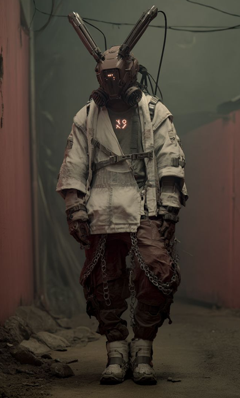
참고 강한 실루엣·기계와 천·개조 방식
제외 사실적인 재질 밀도·인물 직접 삽입 제외
refs/master04/world_01_masked_scavenger.png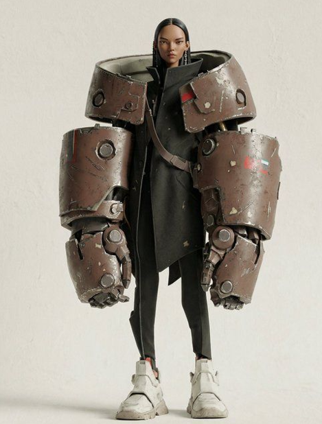
참고 큰 산업기계 덩어리·도장 패널·관절의 기능감
제외 인물 직접 삽입·포토리얼 표면·동일 복장 복제 제외
refs/master04/world_02_heavy_mechanical_arms.png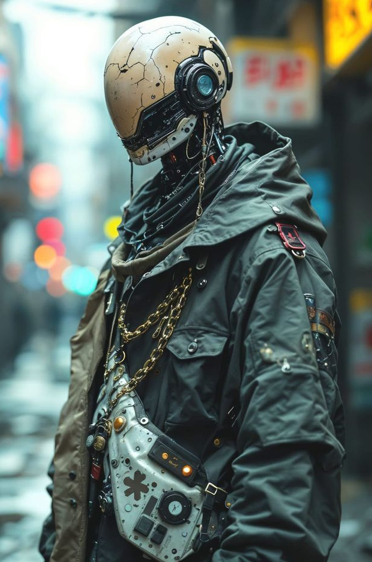
참고 인간/기계 경계·천과 기계 대비·수리 흔적
제외 실사 재질·네온 골목·인물 직접 삽입 제외
refs/master04/world_03_helmet_and_coat.png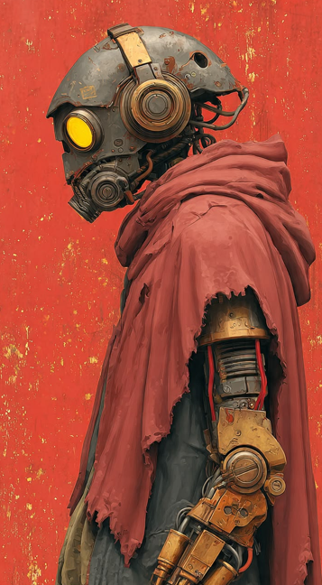
참고 천의 큰 면·금속 관절·제한된 포인트 색·노후 기술
제외 붓질·선화·인물 직접 삽입·색상 고정 제외
refs/master04/world_04_cloak_and_mechanical_arm.png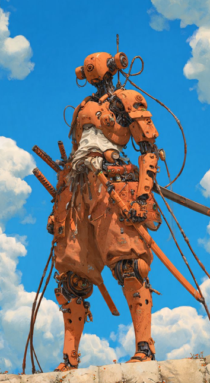
참고 실루엣·노출 구조·우회 케이블·수리 문화
제외 무기·캐릭터 직접 삽입·고밀도 표면·배경 제외
refs/master04/world_05_rebuilt_robot.png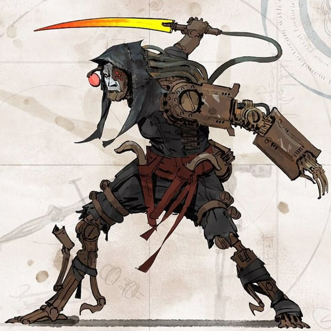
참고 비대칭 개조·기능적인 큰 기계 요소
제외 그림체·전투 포즈·무기·캐릭터 직접 삽입 제외
refs/master04/world_06_asymmetric_machine.png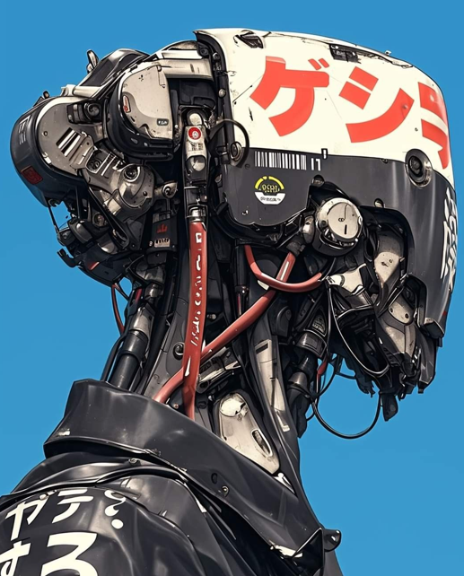
참고 다른 부품 조합·남아 있는 제품 도장·첨단기술의 잔재
제외 제품 문자·촘촘한 부품 묘사·캐릭터 직접 삽입 제외
refs/master04/world_07_repurposed_machine_head.png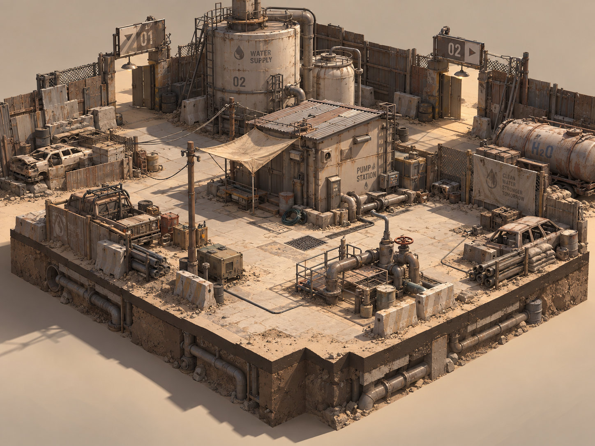
참고 표면·부품·배치가 동시에 과밀해지는 실패 확인
제외 생성의 양성 참조로 전달 금지; 스타일 미승인
review_only/dense_pump_station.png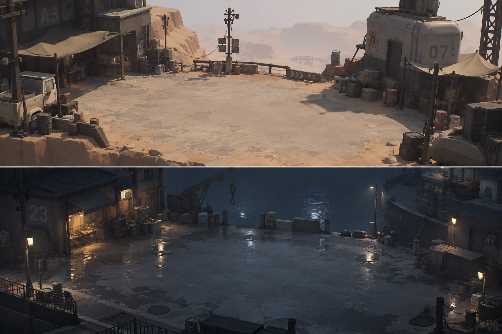
참고 사용자가 좋아한 컨셉 방향과 색감의 이력 보관
제외 레이아웃·카메라·분할 패널·단면 누락은 미승인. 기본 생성 입력으로 전달 금지
review_only/split_day_night_concept_only.png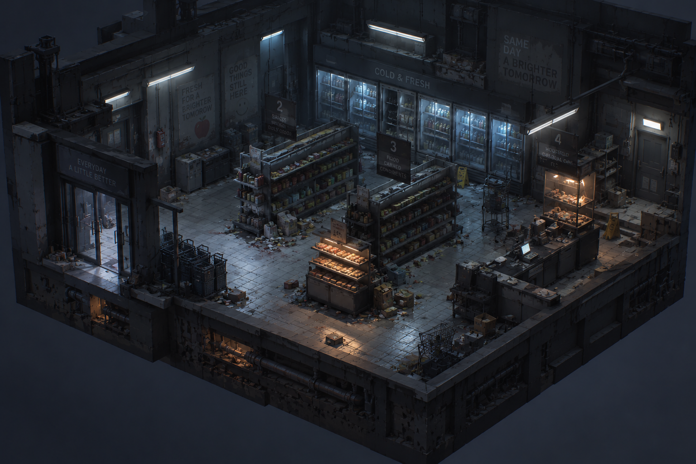
참고 중앙 장애물·출구 판독·미세 디테일 누락 검사 사례
제외 어시스턴트 사후 검사 사례이며 사용자 승인 아님. 생성의 양성 참조로 전달 금지
review_only/store_center_obstructed.png{kind=link}
{kind=link}
{kind=link}
{kind=link}
{kind=link}
{kind=link}
{kind=link}
{kind=link}
{kind=link}
{kind=link}
{kind=link}
{kind=link}
{kind=link}
{kind=link}
{kind=link}
{kind=link}
{kind=link}
{kind=link}
{kind=link}
{kind=link}
{kind=link}